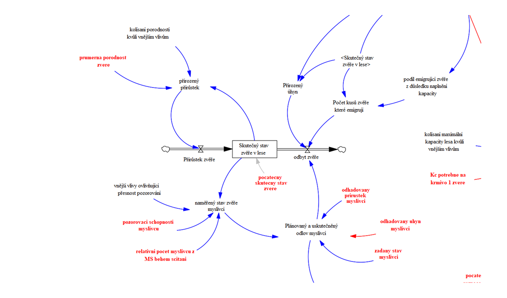

About this project:
While traditional data analysis looks at static historical data, this project utilizes System Dynamics to model complex, non-linear behavior over time. I developed a comprehensive simulation model for a Game Management Association to analyze the "Limits to Growth" archetype in a real-world biological and economic context.
Managing a hunting ground is a balancing act between exponential biological growth and finite resources. The project addresses two types of limits:
I used Vensim to construct the Stock & Flow structure, explicitly modeling the feedback loops that drive the Limits to Growth behavior:
A key part of the project was creating a user-friendly interface (UI) that allows forest managers to test strategies against these limits. The dashboard features:
I tested how different management styles handle the approach to the system's limits. Without proactive management, the system naturally tends towards oscillation or collapse due to information delays.
Maximizing hunting revenue without anticipating costs. The population grows too fast, damages skyrocket, and the association reacts too late.
Result: Overshoot & Collapse (Bankruptcy)Using the model to find a sustainable equilibrium. Balancing measures are applied before economic limits are breached.
Result: Long-term EquilibriumThis project required a shift from linear thinking to Systems Thinking. By modeling the Limits to Growth archetype, I learned how to identify hidden constraints in a system and how time delays can turn a stable growth curve into a destructive cycle. It highlighted that sustainable management isn't about maximizing growth, but about managing limits.